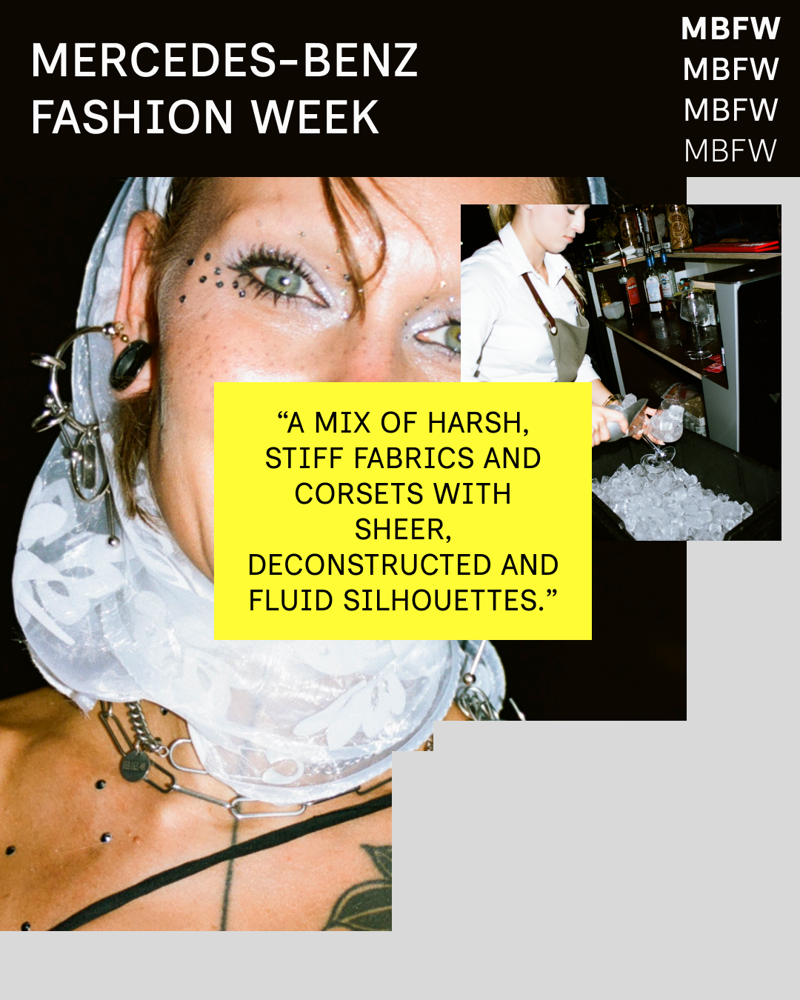

Mercedes-Benz Fashion Week - Prague
06.10.2026
Crowds of shadows, illuminated by thin beams of red light, crawled through a loud people-jungle. This was a banquet, where the clothes were the feast. This was a medieval club dystopia, full of experimental, conflicting, and theatrical designs. This was this year’s Vogue CS Talent Award and UMPRUM graduation show. A model clung to her boxy black handbag, crushed in the middle as if it were a box of chocolates, its thin cable handles twisting and coiling around her arms like electronic charging cords. There was a tension between the industrial and organic: a mix of harsh, stiff fabrics and corsets with sheer, deconstructed and fluid silhouettes. Woven shamanic robes, with floor-length fringes, dangled like jellyfish (Stepan Zachar), while Berghain punks with liberty spikes stomped down the runway in black leather trenches, mini shorts and biking glasses (Dominika Benkova). Models sparkled in Aneta Kadlickova’s bronze and pomegranate skullcaps like club fairies in glitter. Almost comically large metallic chains and hip belts (Katarina Nabilkova), followed by brutalistic jet-black leather bags with spikes (Klara Drevenak; Monika Pavlikova) nodded to the escapism of underground techno.

View this post on Instagram →Transgrese Zine: you are not okay, or talking of counter-culture
26.07.2026
we published a zine this summer! check it out here!